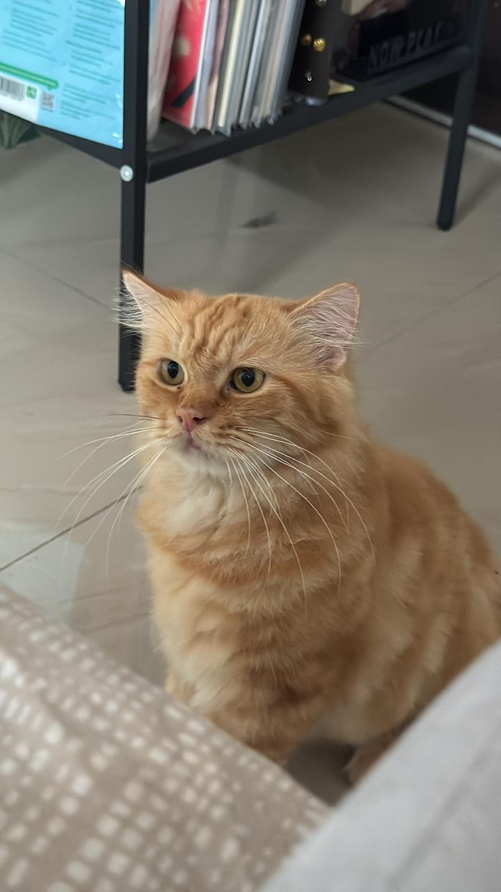
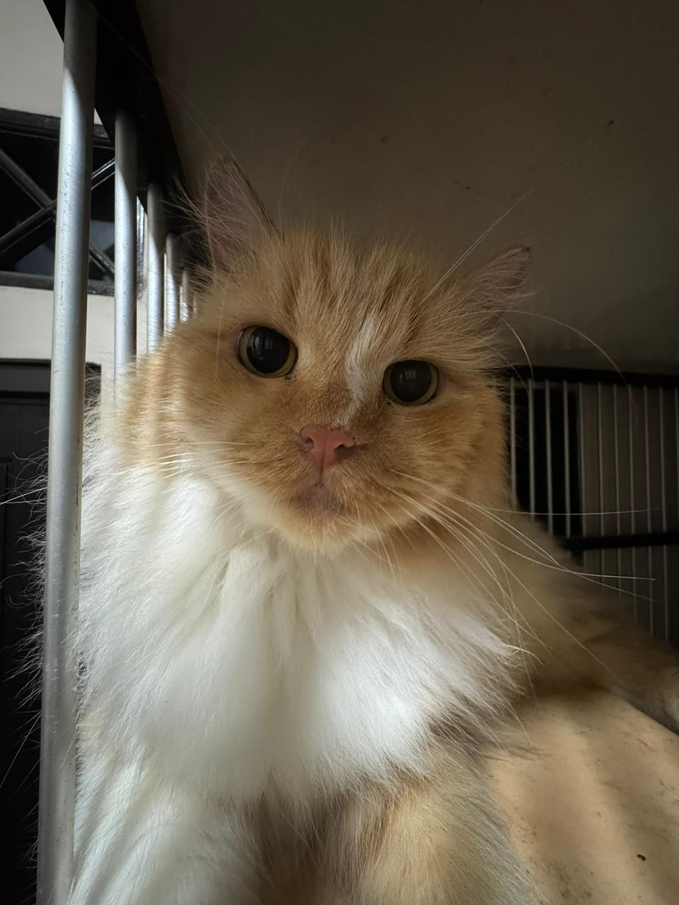
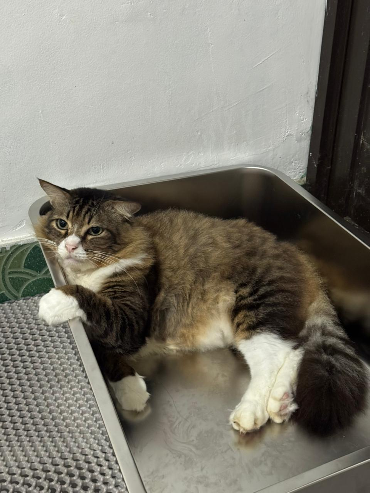
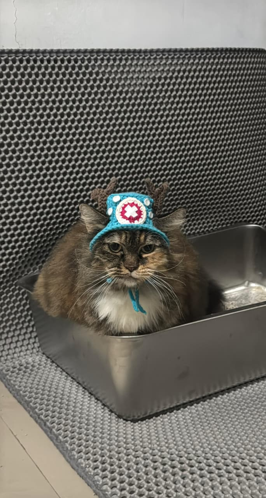
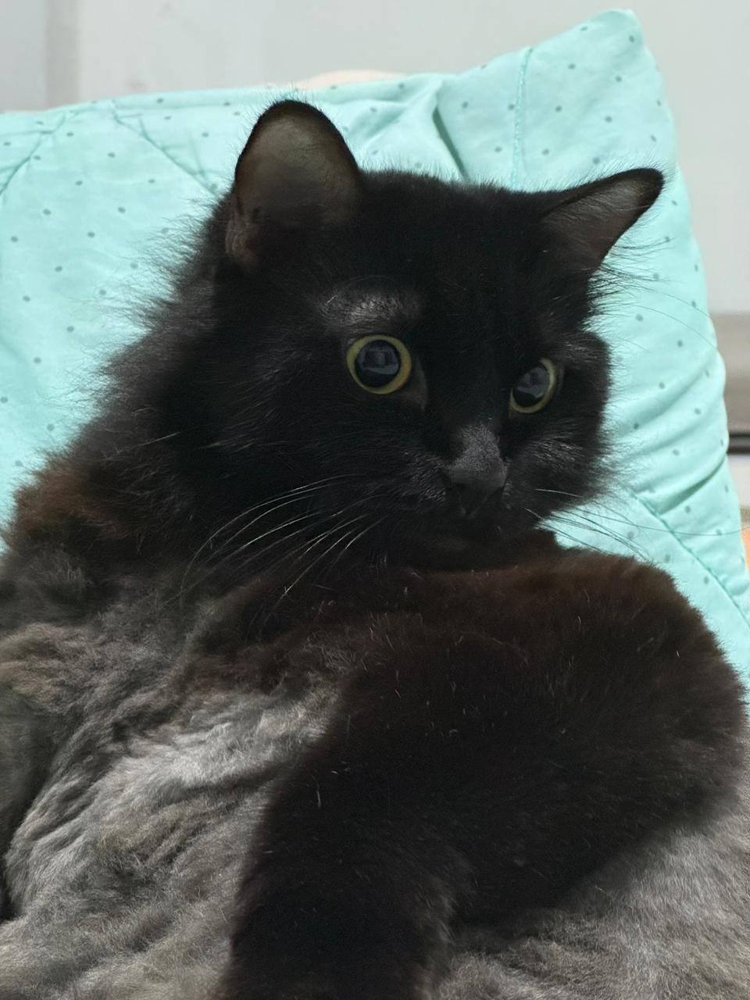
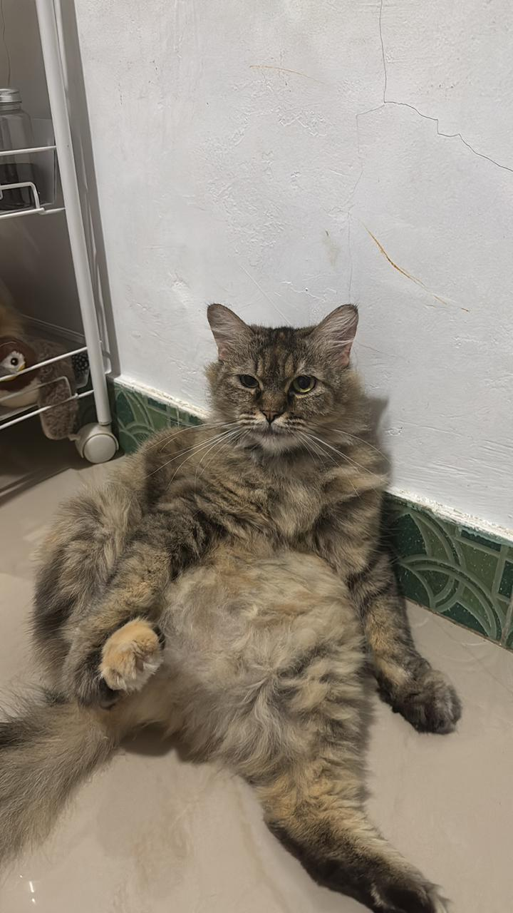
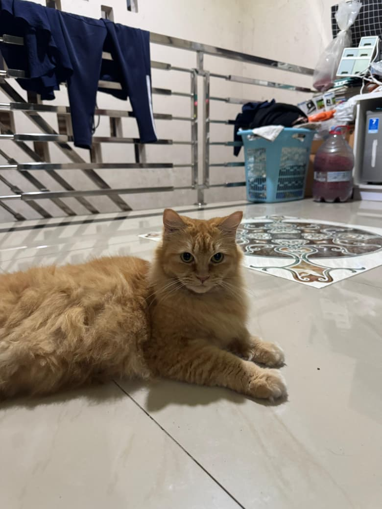
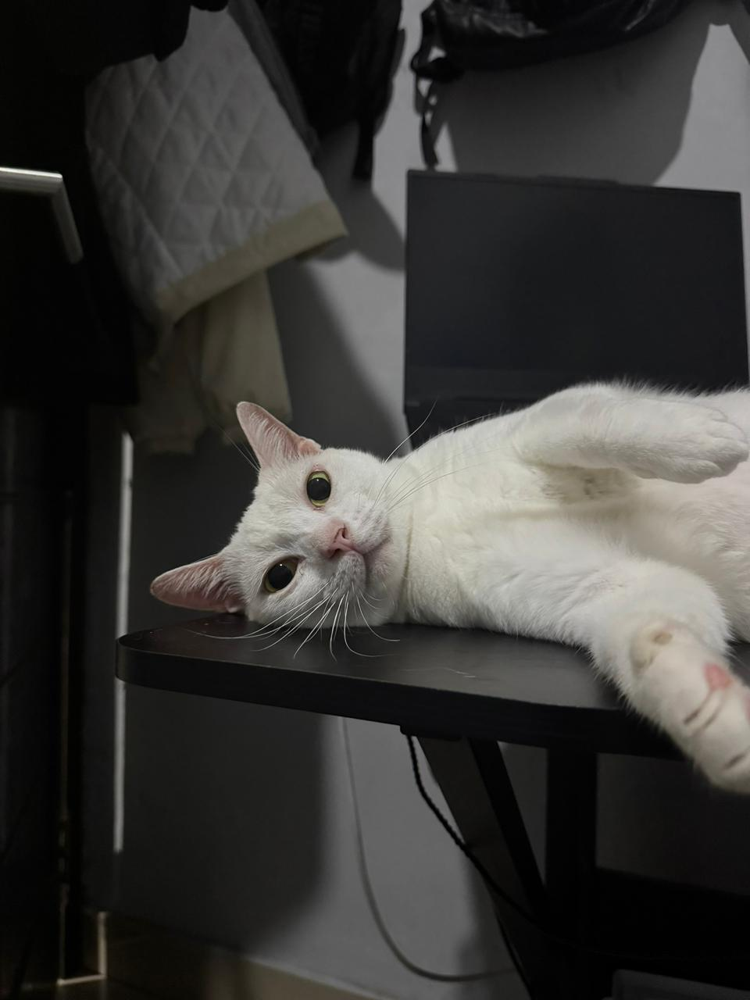
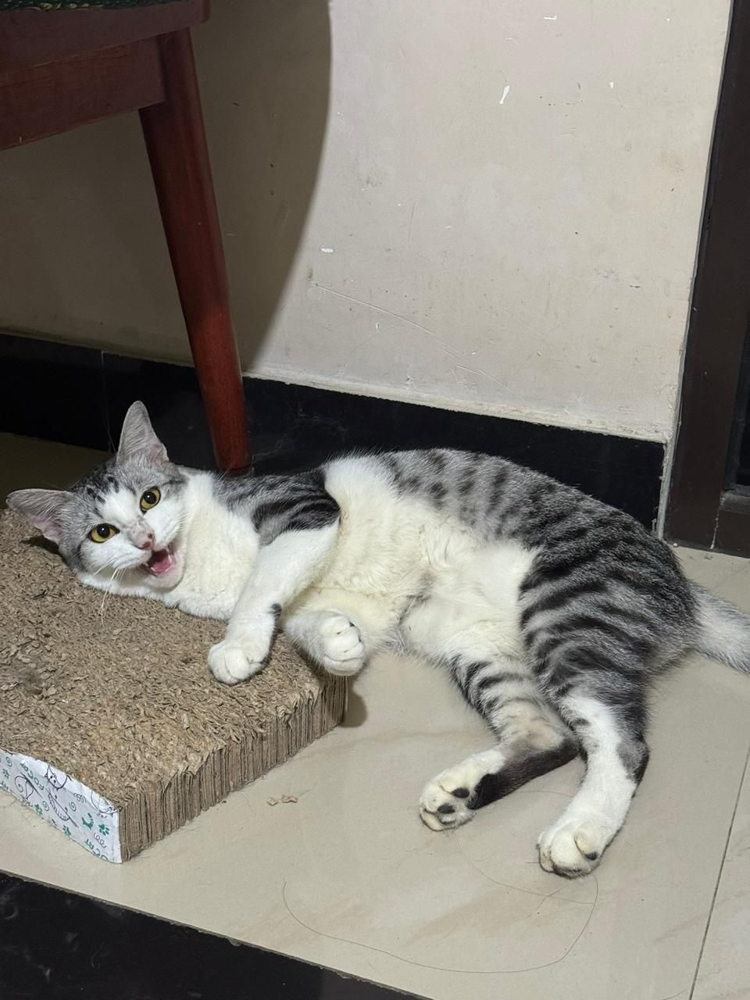

Haru
Pembully Hiro
Sebuah tempat untuk mengenal lebih dekat Haru, Hiro, Jojo, Hani, Blacky, Lolly, Cherry, Panda, dan Oliver.
Lihat Kucing KamiKlik profil mereka untuk mengetahui kepribadian unik masing-masing!

Pembully Hiro

Korban Bullying

Jagoan Rumah

Paling Gembrot

Penguasa Rumah

Introvert

Si Cantik Oren

Ratu Caper

Aktif & Ceria
Deskripsi kucing akan muncul di sini.